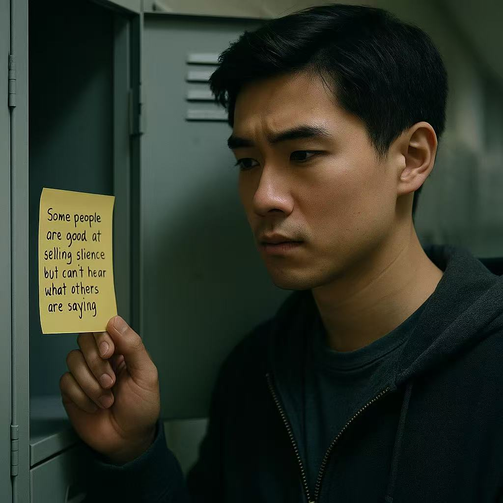

Jack received the anonymous note in the locker: "Some people are good at selling silence but can't hear what others are saying." He began to wonder if someone had been keeping an eye on him.
Jack posted to question the motive behind the note, attempting to turn defense into offense
Jack privately investigated the cameras near the comment wall and suspended the Posting of content
Jack posted a response note: "I'll listen, but are you willing to speak?"